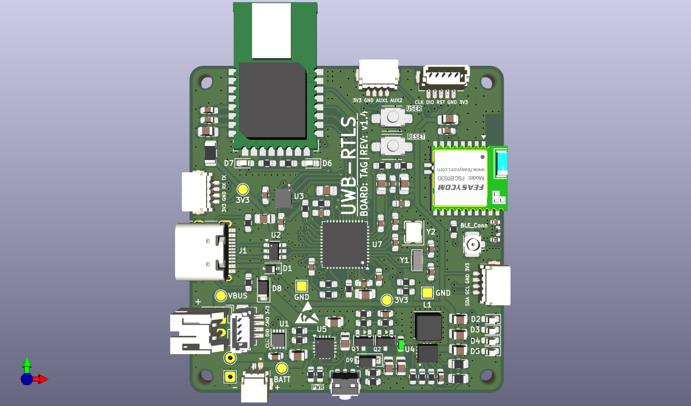
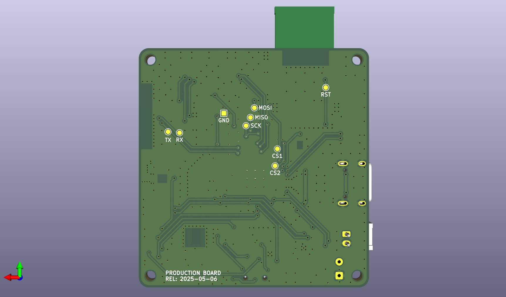
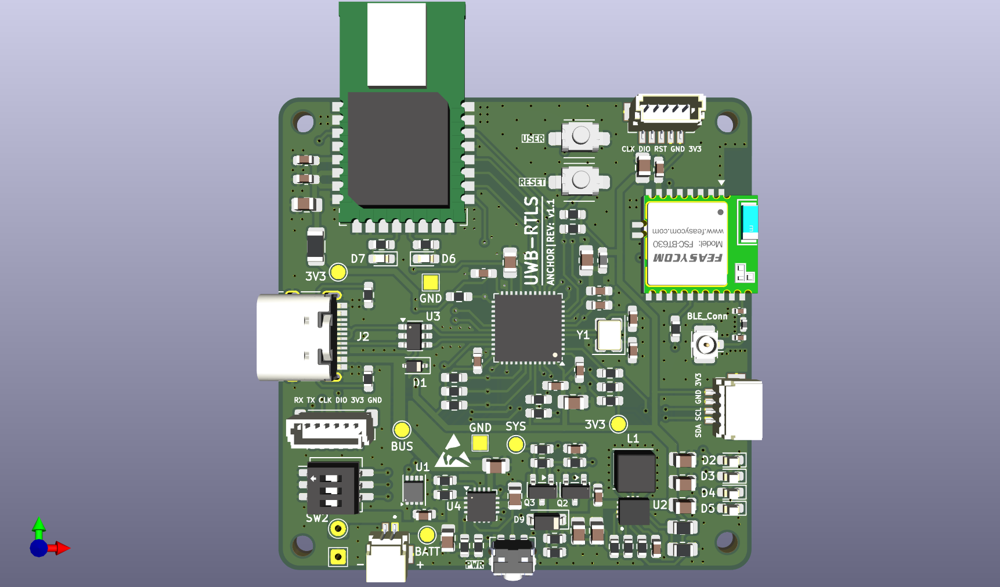
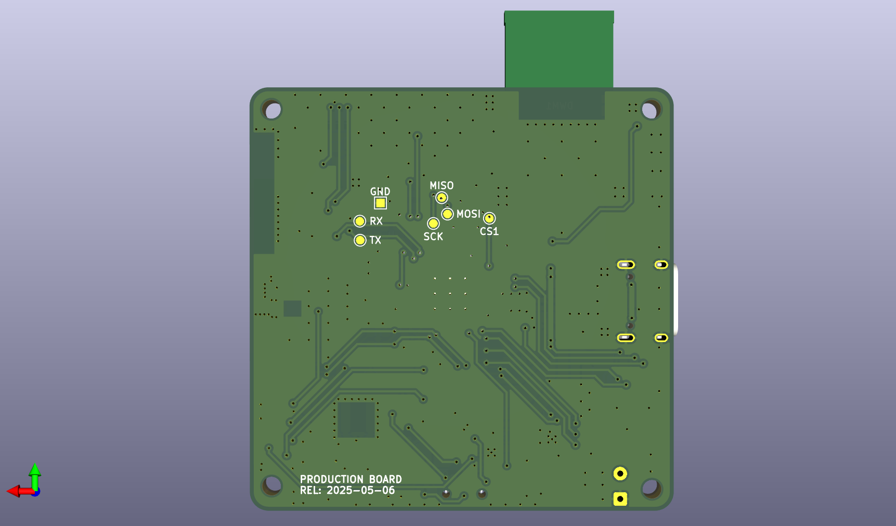

Hardware Specifications & Schematics
Documentation Home · Getting Started · Antenna Calibration · Deployment Guide
This document provides visual hardware references, 3D PCB layouts, component specifications, and pinout mappings for the UWB-RTLS hardware ecosystem.
1. Hardware Ecosystem Overview
The UWB-RTLS system utilizes three dedicated hardware boards designed for distinct roles in the positioning infrastructure:
| Hardware Entity | Core MCU | RF / Sensing Hardware | Power Supply | Primary System Role |
|---|---|---|---|---|
| Tag Board | STM32F411CEU6 | DW1000 + 6-DOF IMU + nRF52832 | 3.7V LiPo / 5V USB | Mobile ranging, UKF fusion, USB pose stream |
| Anchor Board | STM32F411CEU6 | DW1000 + nRF52832 + 3-bit DIP | 5.0V USB Type-C | Fixed reference beacons (ID 0..7) |
| USB Dongle Gateway | Nordic nRF52840 | BLE 5.0 Central Controller | USB VBUS | Wireless telemetry bridge to PC GUI |
2. Tag Board Hardware
The Tag board is mounted directly onto the Autonomous Mobile Robot (AMR). It performs real-time DS-TWR ranging, reads high-rate inertial measurements from the 6-DOF IMU, executes the onboard 8-State UKF, and streams pose telemetry over USB CDC.
| Tag PCB Front (DW1000, STM32F411, 6-DOF IMU) | Tag PCB Back (nRF52832 BLE, LiPo Circuit) |
|---|---|
 |
 |
| Subsystem | Component | Interface | Key Function |
|---|---|---|---|
| MCU | STM32F411CEU6 | 100 MHz Cortex-M4F | Runs FreeRTOS, DS-TWR ranging, and 8-State UKF fusion |
| UWB Radio | Decawave DW1000 / BU01 | SPI1 @ 20 MHz + PB0 (EXTI) | Sub-nanosecond timestamping for time-of-flight |
| Inertial Sensor | 6-DOF IMU (Accel + Gyro) | SPI2 @ 100 Hz | High-rate motion prediction for UKF state propagation |
| Wireless Bridge | Nordic nRF52832 | USART1 @ 115200 baud | BLE 5.0 telemetry broadcast and OTA configuration |
| Robot Link | USB Type-C OTG FS | USB CDC Virtual COM | Streams \(10\text{ Hz}\) pose (px, py, vx, vy, yaw) to robot computer |
| User Control | Pushbutton (PA0) |
EXTI0 | Hold ~3s: Role toggle & reboot; Click: Toggle ranging |
3. Anchor Board Hardware
Anchor boards are installed at fixed, surveyed coordinates around the tracking perimeter. Each Anchor responds to Tag ranging polls within its allocated TDMA time slot.
| Anchor PCB Front (DW1000, STM32, 3-bit DIP) | Anchor PCB Back (nRF52832 BLE, 5V LDO Rail) |
|---|---|
 |
 |
| Subsystem | Component | Interface | Key Function |
|---|---|---|---|
| MCU | STM32F411CEU6 | 100 MHz Cortex-M4F | Manages DW1000 RX/TX timing and packet compilation |
| UWB Radio | Decawave DW1000 / BU01 | SPI1 @ 20 MHz + PB0 (EXTI) | Transmits timestamped response frames |
| ID Selector | 3-position DIP Switch (SW1) |
PB3..PB5 (Inputs) |
Configures Anchor ID (\(0 \dots 7\), up to 8 Anchors) |
| Wireless Bridge | Nordic nRF52832 | USART1 @ 115200 baud | BLE 5.0 diagnostic status reporting |
| Power Input | 5.0V USB Type-C | Dual High-PSRR LDOs | Supplies isolated 3.3V power to digital and RF stages |
4. MCU Pinout & Interface Mapping
| Peripheral | STM32 Pin Assignment | Connected Hardware | Function & Protocol |
|---|---|---|---|
| SPI1 | PA5 (SCK), PA6 (MISO), PA7 (MOSI), PA4 (NSS) |
Decawave DW1000 | 20 MHz transceiver register read/write & frame buffer access |
| EXTI0 | PB0 |
Decawave DW1000 IRQ |
Hardware microsecond interrupt on TX/RX timestamp event |
| SPI2 | PB13 (SCK), PB14 (MISO), PB15 (MOSI), PB12 (NSS) |
6-DOF IMU (Tag Only) | Synchronous \(100\text{ Hz}\) accelerometer and gyroscope sampling |
| USART1 | PA9 (TX), PA10 (RX) |
Nordic nRF52832 | Bidirectional Protobuf packet transport between MCU and BLE |
| USB OTG FS | PA11 (DM), PA12 (DP) |
Robot Controller / PC | USB CDC pose streaming (\(10\text{ Hz}\)) and USB DFU flashing |
| GPIO Button | PA0 (EXTI) |
User Pushbutton | Hold ~3s: Toggle Tag/Anchor role & reboot; Click: Toggle ranging |
| GPIO DIP | PB3..PB5 (Inputs) |
3-position DIP Switch (Anchor) | Configures Anchor ID (\(0 \dots 7\), up to 8 Anchors) |
| ADC1 | PA1 |
Battery Divider (Tag) | Real-time LiPo battery voltage sensing |
5. Hardware Projects & Manufacturing Files
All KiCad PCB project source files, schematics, and manufacturing Gerbers are organized in the repository:
| Board Project | KiCad Source Project | Schematic PDF | Production Gerbers |
|---|---|---|---|
| Tag Board | hardware/tag/ |
Tag Schematic PDF | hardware/tag/tag_genber/ |
| Anchor Board | hardware/anchor/ |
Anchor Schematic PDF | hardware/anchor/anchor_genber/ |